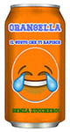
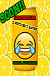

ORANGELLA
ORANGELLA

Orangella è la bevanda pensata dagli sviluppatori ENGIM, per tutti quei ragazzi che hanno bisogno di un po' di energia per poter affrontare le giornate di studio più intense e le infinite ore di lezione di tutti i giorni.
Orangella è senza zucchero! Contiene vitamina C, la vitamina utile per le difese immunitarie.
Che aspetti?Provala nei migliori bar della città!
LIMONGELLA

Limongella è la nostra nuova bevanda al gusto di limone pensata dagli sviluppatori ENGIM per dare un gusto nuovo alle tue stressanti giornate scolastiche e lavorative.
E' sempre senza zucchero e ricchissima di vitamina C! E' stata eletta come miglior futura bevanda del 2017 dagli esperti del settore!
Che aspetti?Provala alla sua uscita programmata per luglio 2017 nei migliori bar della città!